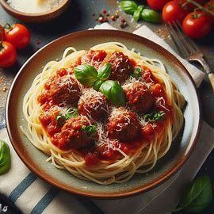

Recetas Caseras
Receta clasicas
En la receta de hoy, haremos juntos una deliciosa "Pasta con albondiga y salsa de tomate" facil y muy deliciosa.

Ingrediente:
instrucciones de preparacion:
1. Preparacion de las Albondigas:
-
En un tazón grande, mezcla la carne molida, huevo, pan rallado, queso parmesano, ajo, sal y pimienta.
-
Forma pequeñas albóndigas con las manos y colócalas en un plato.
2. Coccion de las albondiga:
-
Calienta una sartén grande a fuego medio-alto con 1 cucharada de aceite de oliva.
-
Agrega las albóndigas y cocina hasta que estén doradas por todos lados. Retira y reserva.
3. Preparacion de la salsa de tomate:
-
En la misma sartén, agrega la otra cucharada de aceite de oliva.
-
Añade el tomate triturado, azúcar, orégano, albahaca, sal y pimienta al gusto.
-
Cocina a fuego medio durante 15-20 minutos, o hasta que la salsa espese.
4. Coccion de la pasta:
-
Mientras la salsa se cocina, hierve agua en una olla grande.
-
Cocina la pasta según las instrucciones del paquete. Escúrrela.
5. Ensamblaje:
-
Agrega las albóndigas a la salsa de tomate y mezcla bien.
-
Sirve la pasta en platos individuales y cubre con la mezcla de albóndigas y salsa.
-
Opcional: Espolvorea con queso parmesano rallado.
¡Y listo! Tienes una deliciosa pasta con albóndigas y salsa de tomate. ¡Espero que disfrutes de esta receta!